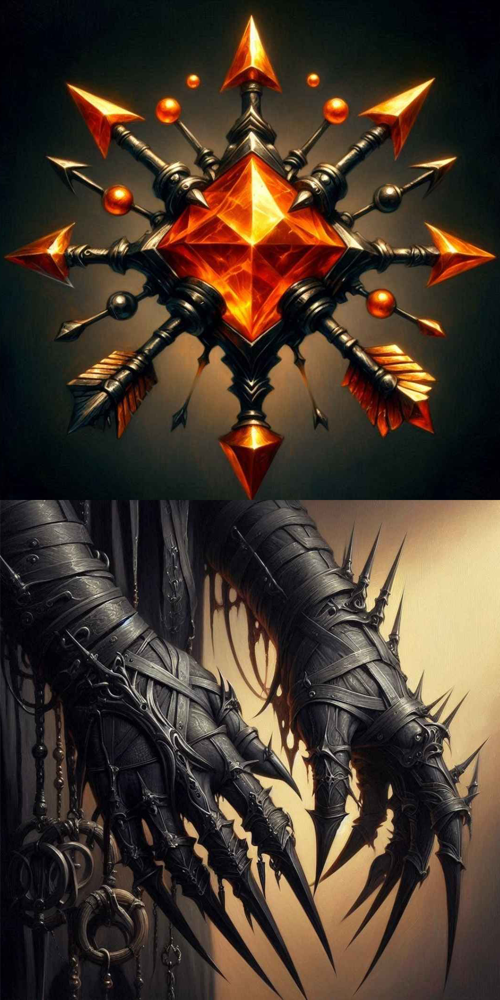

Welcome to Azios!
"The World of the Morning Star"
This is a wiki for a personal worldbuilding project.
"The World of the Morning Star"
This is a wiki for a personal worldbuilding project.
CC BY-NC-SA

Industriomancy
Industriomancy is the form of magic that has been created in the Four Cities. The magical abilities of this process were discovered accidentally through the technological advancement of Four Cities, and then elaborated upon as more and more components were discovered.Part of the process of Industriomancy is the active harming of the ecosystem surrounding it, the very act of perverting and polluting nature acting as a wellspring for the magic to pour from.
Industriomancers
The users of Industriomancy themselves are unique among the magic-users of Azios as a large number of them aren’t even aware that they would even be considered to be as such by the metrics used by most cultures. The reason for this is because the Aristocrats who fund the industry of the cities are playing an active role in the creation of the magic by doing so, though they are unaware of this, and the flow of magic would diminish to a trickle without them. As such they are industriomancers, whose magical product is other industriomancers. They provide the raw potential for magical creations to the rest of the cities, while not knowing that they are performing this role.The more refined inustriomancer will often specialize into niches that the the Four Cities require to upkeep their expensive life styles. Examples of this include, metal worker who create devices that can store and exude energy, and bio-industriomancers who create the Vat Born.
Beyond this, even simple artisans within the city can tap into this power and imbue their creations with a wondrous spark of life.
Notable Creations

Blood Engine and Tuning Gloves
Lightining Launcher
Metal staves made of iron and bronze that have a single gear perched atop them and a switch on their sides. When struck by lightning these staves can store the bolt, and release it with a flick of the switch. These are common weapons among Vat Born soldiers as they are also effective melee weapons.Vat Born
See Vat Born.Artificial lifeforms created to serve the various needs of the Four Cities.
Blood Engine
One of a pair of the most complicated creations made by industriomancy, and are granted to Vat Born Artisans at birth. Blood Engines are small trinkets that resemble a brooch made from metal arrows emblazoned with a central ruby. These devices consume blood from around them, turning it into energy that can then be released by its companion device, the Tuning Gloves, it takes around twenty adult humans worth of blood to fully charge a Blood Engine.Tuning Gloves
One of a pair of the most complicated creations made by industriomancy, and are granted to Vat Born Artisans at birth. The Tuning Gloves are tight fitting black gloves with long pointed needles extending from their finger tips. These gloves are the companion device of the Blood Engine and allow the wearer to extract the stored energy to create a variety of reality warping effects. The combined uses of the gloves and the engine are to high to count and countless Vat Born Artisans have spent their lives cataloguing and learning their uses.Original File: Industriomancy.md